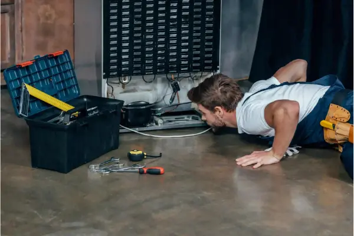
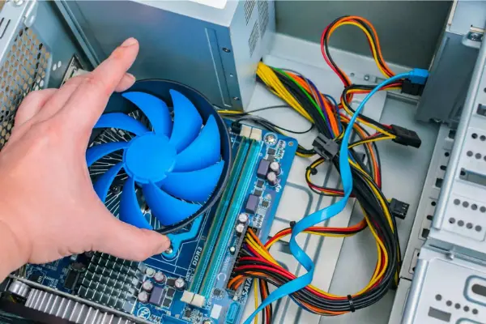
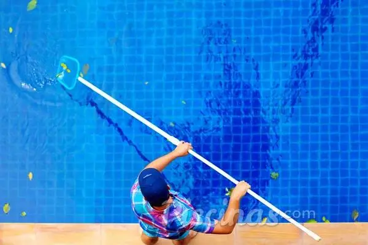

Serviços
Encanador

Um Encanador ou Bombeiro Hidráulico é responsável pela instalação e manutenção de sistemas usados para água potável, esgoto e drenagem em sistemas de encanamento. Além de instalar e reparar tubulações, conexões e válvulas.
Eletricista

O Eletricista é o especialista em instalações elétricas residenciais, prediais e industriais, atuando na instalação de novos componentes e na manutenção de infraestruturas elétricas, além de garantir a segurança do sistema elétrico.
Montador de Móveis

O Montador é a denominação de cargo do profissional que atua na montagem de móveis, na instalação de equipamentos e utensílios domésticos na residência ou em empresas. Além de seguir instruções técnicas para garantir a correta montagem e instalação.
Chaveiro

O Chaveiro é o profissional responsável por fabricar e fazer cópias de chaves, trocar segredos e realizar manutenção de fechaduras, além de vender equipamentos de segurança (cadeados, travas, chaves personalizadas etc.).
Desentupidora
Oferecemos o Serviço de Desentupidora com atendimento rápido e de qualidade para atender qualquer tipo de emergência na área de desentupimento. Conte conosco para desentupir: Pias, ralos, tanques, entre outros itens.
Jardineiro
O Jardineiro é o profissional responsável por cuidar do jardim dos prédios, casas, empresas, parques, condomínios, escolas e etc. É essencial que tenha conhecimentos básicos em relação o meio ambiente e espécies de plantas.
Fretes e Mudanças

Buscando uma equipe especializada em transporte de mercadorias, mudança ou pequenos fretes ? Conheça nossos serviços oferecidos. Somos reconhecidos pelo atendimento de alto nível e serviço rápido. Fazemos mudanças locais e interestaduais.
Técnico em Refrigeração
O Técnico em Refrigeração e Climatização é um profissional capacitado para projetar, instalar e manter sistemas de refrigeração e climatização, conforme normas técnicas, ambientais e de segurança.
Serralheiro
O Serralheiro é o profissional responsável por atuar com a realização de cortes de tubos, alumínios e acabamentos de peças. Um Serralheiro irá atuar com corte dobra traçagem, interpretação de desenho, medidas, solda, eletrodo, e acetileno.
Técnico em Informática
Um Técnico em Informática é o profissional que está apto a realizar configurações em computadores, redes de internet, instalar equipamentos e a verificar as causas de falhas. Faz manutenção preventiva para garantir o bom funcionamento dos sistemas.
Pintor

O Pintor é responsável pela proteção e decoração de paredes. E têm como proposito melhorar os aspetos estéticos e a sua proteção contra os efeitos da água, corrosão, insetos e fungos (bolores). O pintor prepara superfícies, lixando e aplicando selantes.
Dedetizador
O dedetizador é o profissional habilitado no combate a pragas: escorpiões, lacraias, moscas, mosquitos, baratas, pulgas, traças, percevejos, carrapatos. É essencial controlar a grande variedade de insetos que podem invadir seu espaço.
Vidraceiro
O Vidraceiro prepara máquinas , equipamentos e instrumentos para corte de vidros. Cortam, e instalam vidros, vitrais e espelhos. temperam vidros e montam vidros temperados. confeccionam, lapidam e pintam vitrais.
Limpeza de Piscina
A função principal do piscineiro será a manutenção preventiva mantendo sua piscina pronta para o uso. Para fazer isso, ele precisará realizar a manutenção de diversas maneiras. Isso vai garantir a limpeza e a pureza da água.
Formas de Pagamento
Aqui você encontra flexibilidade nos pagamentos.
Aceitamos e parcelamos via cartão de crédito.